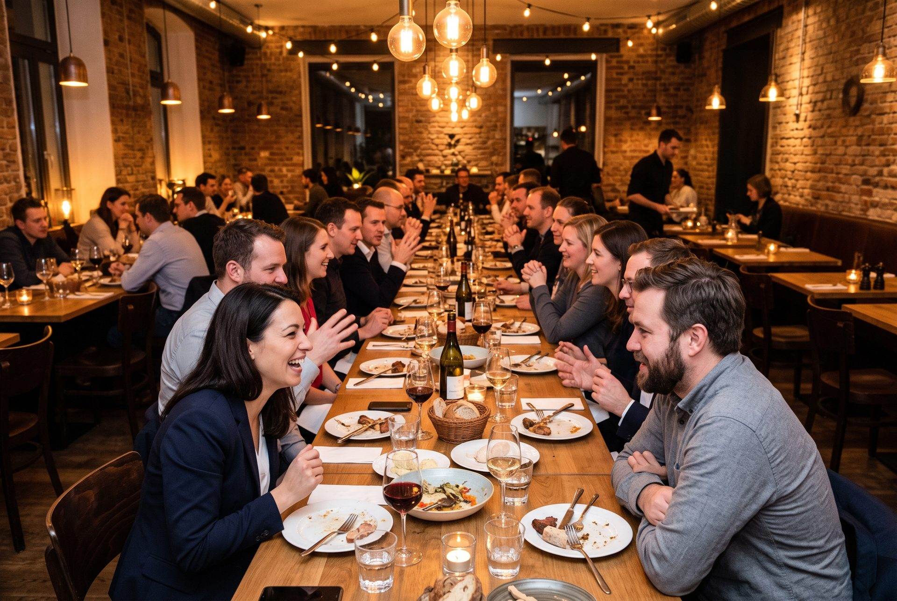

Change Management im Kontext der Arbeit mit KI · Köln, Rheinauhafen · Dezember 2026
25 Change Management Experts
Werde einer von 25.
25 EXPERTS. Ein Thema. Und die KI sitzt mit am Tisch.
25 CHANGE MANAGEMENT EXPERTS: 25 Fachleute aus dem Change Management bei unterschiedlichen Versicherern, Maklerpools und Versicherungsvertrieben, jede und jeder mit genau einer offenen Frage. Anderthalb Tage an den zentralen Fragen des Change Managements im Kontext der Arbeit mit KI: Wofür nutzen Branchenkolleg*innen sie heute, wofür nicht? Gängige KI-Werkzeuge live am Tisch, fachlich gechallengt. Am Ende das Dissenspapier: worin einig, worin nicht, und wie Du damit weiterarbeitest. Am Tisch sitzt die erste und zweite Führungsebene (Team-, Abteilungs- und Bereichsleitung sowie Vorstandsassistenz) aus Versicherern, Maklerpools und Versicherungsvertrieben.
25 Plätze
Anmeldung direkt online
Zahlung per PayPal oder Rechnung
Ticket nach Zahlungseingang
Für wen
Für wen
Kommt Dir das bekannt vor?
- Du hast genau eine Frage, die Du seit Monaten mit Dir herumträgst und niemandem stellen konntest, der sie versteht.
- Du verantwortest die Einführung von KI-Assistenten in den Fachbereichen, mit Budget, Team und Zeitplan, während die Werkzeuge Deine eigene Rolle verändern.
- Das Tempo setzt der Vorstand, der Dienstleister oder das nächste Update. Deine Phasenpläne und Pilotgruppen sollen trotzdem tragen, und Du musst entscheiden, bevor die Lage klar ist.
- Der Vorstand erwartet von Dir eine Vorlage zur Akzeptanz von Systemen, von denen niemand sagen kann, wie sie in sechs Monaten arbeiten. Der Betriebsrat fragt Dich genau das. Dein Team schaut auf Dich.
- Du leitest Change, Transformation, Organisationsentwicklung, HR oder interne Kommunikation bei einem Versicherer, Maklerpool oder Versicherungsvertrieb: in der ersten oder zweiten Führungsebene, von der Teamleitung bis zum Vorstandsstab.
Dann gehörst Du an diesen Tisch. Bring diese eine Frage mit. Der Tisch ist für die Fachbereiche von Versicherern, Maklerpools und Versicherungsvertrieben gedacht, nicht für die KI-Abteilung, nicht für Dein Team und nicht für Dienstleister. 25 EXPERTS verbindet die nächste Generation von Führungskräften der Versicherungsbranche: ein Format, das nur für sie gemacht ist. Jetzt anmelden
Der rote Faden
Deine eine offene Frage
Deine offene Frage ist optional, und sie lohnt sich: Du stellst sie im Anmeldeformular, am 3. Dezember um 10:15 sagst Du sie dem Raum in 60 Sekunden, um 10:55 wird sie mit den anderen geclustert. Daraus entsteht die Arbeitsagenda: die Fragen des Raums, geclustert, das ist das Programm.
- „Wie beteilige ich den Betriebsrat an einem System, das sich alle drei Monate ändert, und was lege ich dem Vorstand dazu vor?"
- „Woran merke ich, ob Widerstand begründet ist oder Gewöhnung?"
- „Wofür gebe ich im nächsten Jahr Budget frei, wenn ich nicht weiß, welches KI-Werkzeug in sechs Monaten noch so arbeitet wie heute?"
- „Was bleibt von meiner Rolle und der meines Teams, wenn die Werkzeuge selbst Akzeptanz erzeugen?"
Was Du bekommst
Was Du bekommst
Was Du bei 25 EXPERTS bekommst
Kein Tagungsband, keine Folien. Fünf Dinge, die Du aus Köln mitnimmst, und drei, die es so nur hier gibt: für 25 Change-Verantwortliche aus Versicherern, Maklerpools und Versicherungsvertrieben.
Impulse, die etwas taugen.
Fachleute aus Deiner Funktion, Forschung und Wissenschaft, dazu Vorstände aus der Branche. Nicht als Vortragsprogramm, sondern als Stoff für die Arbeit am Tisch.
Austausch, der bleibt.
24 weitere Führungskräfte derselben Funktion aus anderen Häusern, mit Namen und Kontakt. Daraus entstehen belastbare Beziehungen, nicht Visitenkartenstapel.
Arbeit an dem, was gerade ansteht.
Anderthalb Tage lösungsorientiert an den aktuellen Fragen Deiner Funktion. Keine reinen Keynotes, keine Vorträge zum Zuhören.
Der Abend ist immer inklusive.
Ein lokales Community-Event am Abend des ersten Tages gehört zu jeder Edition dazu, im Preis enthalten. Dort gehen die Fragen weiter.
Zugang über die Edition hinaus.
Wer einmal Teil einer 25-EXPERTS-Serie ist, wird zu gesonderten Community-Events eingeladen, die es nur für genau diese Zielgruppe gibt.
Und sonst nirgends
Was Du hier bekommst und sonst nirgends
- Praktische Evidenz statt Theorie. Wofür Branchenkolleg*innen KI im eigenen Verantwortungsbereich heute nutzen und wofür nicht: live geprüft, mit ChatGPT und Claude am Tisch, statt behauptet.
- Keine Produkt- und Dienstleister-Bühne. Ein geschlossenes Format nur für Fachleute aus Versicherern, Maklerpools und Versicherungsvertrieben. Kein Publikum, keine Verkaufsbühne, niemand pitcht.
- Vernetzung über das Event hinaus. Gemeinsame WhatsApp-Gruppe der Teilnehmenden, Side-Events und die Community-Events der Serie. Der Kontakt endet nicht am Freitagmittag.
So entsteht das
So entsteht das
Eine Frage. Anderthalb Tage. Ein Papier.
Dieselbe Geschichte wie in jeder Edition, hier für das Change Management.
Dieselbe Funktion, andere Häuser.
25 Fachleute aus dem Change Management bei unterschiedlichen Versicherern, Maklerpools und Versicherungsvertrieben. Am Tisch sitzt die erste und zweite Führungsebene. Keine Zufallsmischung, keine Bühne, keine Dienstleister.
Genau eine offene Frage mitbringen.
Der Eintritt ist eine Frage, kein Titel. Am 3. Dezember um 10:55 werden die 25 Fragen geclustert. Das ist das Programm.
Anderthalb Tage an den zentralen Fragen des Change Managements.
Im Kontext der Arbeit mit KI: nicht KI als Thema, sondern Deine eigene Arbeit im Licht von KI.
Wofür genutzt, wofür nicht?
Der ehrliche Abgleich unter Change-Kolleg*innen der Branche. Das ist der Kern des Nutzens.
KI-Werkzeuge live am Tisch.
ChatGPT und Claude bekommen die Frage des Raums, der Raum bewertet. Fachlich gechallengt, sicher und DSGVO-konform: keine personenbezogenen oder vertraulichen Daten.
Ein Papier.
Worin einig, worin nicht, und wie Du damit weiterarbeitest: das Dissenspapier mit 8 bis 10 Thesen.
Signaturelemente
Signaturelemente
Die KI sitzt mit am Tisch. Du entscheidest, was zählt.
Drei Bausteine, die es in dieser Form nur hier gibt. Das Programm kommt danach.
-
01

Der 26. Experte
Wir stellen die Frage des Raums live an ChatGPT und Claude. Die Antworten kommen ungeschnitten auf die Leinwand, und der Raum challengt sie fachlich: Was trägt, was ist oberflächlich, was fehlt. Am zweiten Tag bekommt die KI Deine Thesen und muss dagegenhalten. Sicher und DSGVO-konform: keine personenbezogenen oder vertraulichen Daten.
Im Detail -
02

Das Kuvert
Am Ende schreibt jeder eine Vorhersage für sein Fach in zwölf Monaten und versiegelt sie. Die KI schreibt dieselbe Vorhersage ins 26. Kuvert. Beim nächsten Treffen zu diesem Thema wird geöffnet: Wer lag näher dran, Du oder die KI?
Im Detail -
03

Das Dissenspapier
Wir schreiben auf, worin sich 25 Fachleute einig sind und worin nicht, mit den Gründen beider Seiten. 8 bis 10 Thesen und ein Abschnitt „So arbeitest Du damit weiter". Geschrieben am zweiten Tag, veröffentlicht und an alle Teilnehmer versandt.
Im Detail
Leitfrage
Leitfrage
Woran der Raum arbeitet
Die Arbeitsagenda entsteht am 3. Dezember um 10:55 Uhr aus den 25 offenen Fragen der Vorstellungsrunde: 25 Fragen, geclustert, das ist das Programm. Das hier ist der Rahmen, den wir mitbringen. Deine Frage kommt dazu.
Change Manager sollen Organisationen durch eine Veränderung führen, deren Tempo und Richtung sie nicht kontrollieren. Die Werkzeuge, mit denen sie Akzeptanz erzeugen sollen, verändern gleichzeitig ihre eigene Rolle. Wie führt man unter diesen Bedingungen, und was bleibt von der Funktion?
- KI-Assistenten in den Fachbereichen. Das Tempo setzt der Vorstand, der Dienstleister oder das nächste Update des KI-Modells. Was wird aus Phasenplänen, Pilotgruppen und Stakeholder-Analysen, wenn der Zeitplan von außen kommt und sich das Werkzeug während der Einführung ändert?
- Widerstand und Erwartungen. Ein Teil des Widerstands ist begründet, ein Teil ist Gewöhnung, ein Teil ist Angst um die eigene Aufgabe. Wie unterscheidet man das, wenn niemand sagen kann, wie das System in sechs Monaten arbeitet? Und wie steuert man Erwartungen, die von Herstellerversprechen und LinkedIn geprägt sind?
- Qualifizierung und Betriebsrat. Was ist zu qualifizieren, wenn sich Aufgaben schneller verschieben als Curricula? Wie beteiligt man Betriebsräte an Systemen, die sich laufend ändern, und wie schließt man Vereinbarungen, die länger halten als eine Version des KI-Modells?
- Kommunikation und Change als Dauerzustand. Wie kommuniziert man eine Veränderung ohne Enddatum? Und was wird aus der Rolle, wenn die Werkzeuge selbst Akzeptanz erzeugen oder zerstören, ohne dass jemand aus dem Change Management daneben steht?
Ablauf
Ablauf
Anderthalb Tage, Stunde für Stunde
Mit Siegelpunkt markiert: die drei Bausteine, die es nur hier gibt. Impulse aus Forschung, Praxis und Vorstand, dazu gegebenenfalls ein Praxisfall eines Kooperationspartners.
Tag 1 · Donnerstag, 3. Dezember 2026
Ankommen mit kleinem Frühstück
Begrüßung und Vorstellungsrunde
Je 60 Sekunden: Name, Haus und Deine eine offene Frage. Sie ist Dein Eintritt und Dein Beitrag zur Arbeitsagenda.
Fragen clustern
25 Fragen, geclustert. Das ist das Programm der anderthalb Tage.
Impuls 1 Forschung
Impuls 2 Praxis
Lunch
Der 26. Experte, Runde 1
Die Frage des Vormittags live an ChatGPT und Claude. Antworten ungeschnitten auf der Leinwand. Der Raum challengt fachlich: Was trägt, was nicht. Sicher und DSGVO-konform.
Impuls 3 Praxis
Gegebenenfalls ein Praxisfall eines Kooperationspartners: ohne Produkt, von den Gastgebern inhaltlich freigegeben.
Kaffeepause
Arbeitsblock 1, drei Tische
Ergebnissicherung
Aufbruch zur Abendlocation
Aperitif
Dinner

ab 21:00 offener Ausklang
Tag 2 · Freitag, 4. Dezember 2026
Frühstück
Recap
Ab der zweiten Edition eines Themas werden hier zusätzlich die Kuverts der Vorgängeredition geöffnet.
Impuls 4 Vorstand
Arbeitsblock 2, Formulierung der Thesen inklusive Runde 2 des 26. Experten
Die KI bekommt die Thesen des Raums und formuliert Gegenargumente. Was standhält, wandert ins Dissenspapier.
Feedback und Ausblick auf die nächste Edition
Das Kuvert
Deine Vorhersage für Dein Fach in zwölf Monaten. Unterschrieben, versiegelt. Die KI schreibt das 26. Kuvert.
Lunch
Ende
Impulse
Vier Impulse, je 45 Minuten
Stoff für die Arbeit an den Tischen, kein Vortragsprogramm. Die Impulsgeber nennen wir hier, sobald sie zugesagt haben. Bis dahin stehen die Rollen.
-
Impuls 1 · Forschung · Tag 1, 11:05
[TBD: Impulsgeber Forschung, Organisationspsychologie/Transformationsforschung]
Was die Forschung über Akzeptanz, Widerstand und Rollenwandel unter Bedingungen fremdbestimmten Tempos weiß. Und was sie noch nicht weiß.
-
Impuls 2 · Praxis · Tag 1, 11:50
[TBD: Impulsgeber Praxis, Change-Verantwortliche(r) eines Versicherers]
Ein konkreter Rollout aus einem Versicherer: was geplant war, was passiert ist, was man heute anders machen würde.
-
Impuls 3 · Praxis · Tag 1, 14:15
[TBD: Impulsgeber Praxis, zweiter Praxisfall aus der Branche]
Ein zweiter Praxisfall aus der Branche. Gegebenenfalls ist das der Praxisfall eines Kooperationspartners: ohne Produkt, ohne Folien mit Logo-Parade, vorher von den Gastgebern inhaltlich freigegeben. Höchstens einer je Edition.
-
Impuls 4 · Vorstand · Tag 2, 10:15
[TBD: Impulsgeber Vorstand, Vorstandsmitglied eines Versicherers]
Die Sicht von oben: Was der Vorstand vom Change Management erwartet, wenn KI-Einführung Vorstandsthema ist. Und was er selbst nicht steuern kann.
Ergebnis
Was Du am Montag danach in der Hand hast
Ein Dokument mit 8 bis 10 Thesen. Es hält fest, worin sich der Raum einig war und worin nicht, mit den Gründen beider Seiten, und wie Du damit weiterarbeitest. Geschrieben am zweiten Tag, geprüft gegen die Gegenargumente der KI.
- Einigkeit und Bruchlinien. Nicht die kleinste gemeinsame Aussage, sondern die Stellen, an denen 25 erfahrene Leute uneins bleiben. Das ist der Teil, den Du sonst nirgends liest.
- Alles mitgeschrieben. Die Fragen an die KI und ihre Antworten aus beiden Runden stehen im Papier, einschließlich der festen Frage, die bei der nächsten Change-Management-Edition unverändert wieder gestellt wird.
- So arbeitest Du damit weiter. Ein eigener Abschnitt am Ende: was Du am Montag danach in Deine Runde trägst, was Du dem Vorstand vorlegst, was Du in Deinem Haus prüfst, was Du bewusst liegen lässt.
- Veröffentlichung. Das Dissenspapier wird veröffentlicht und an alle Teilnehmer versandt. Es nennt Thesen und Begründungen, keine Urheber (Chatham House Rule). Kooperationspartner der Edition werden genannt. Kanal: [TBD: Veröffentlichungskanal]
- Für Dich als Teilnehmer. Du erhältst das Dissenspapier vor der Veröffentlichung und kannst es in Deine Runde tragen, bevor es jemand anderes gelesen hat.
Enthalten
- Teilnahme an beiden Tagen
- Verpflegung an beiden Tagen (Frühstück, Lunch, Kaffee)
- Abendessen am 3. Dezember mit Aperitif
- Das Dissenspapier vor Veröffentlichung
- Dein Kuvert, verwahrt bis zur nächsten Change-Management-Edition
Nicht enthalten
- Übernachtung (bucht jeder selbst)
- Anreise
Anmeldung
Anmeldung
Einer von 25 werden
Drei Minuten, direkt online. Nach dem Absenden geht es sofort zur Zahlung (PayPal oder Rechnung); nach Zahlungseingang kommt Dein Ticket.
Verbindliche Anmeldung mit direkter Zahlung. Nach dem Absenden wirst Du direkt zur Zahlung weitergeleitet (PayPal oder Rechnung mit Zahlungsziel); nach Zahlungseingang erhältst Du Dein Ticket und alle weiteren Informationen.
25 Plätze, ausschließlich für die erste und zweite Führungsebene (Team-, Abteilungs- und Bereichsleitung sowie Vorstandsassistenz) aus Versicherern, Maklerpools und Versicherungsvertrieben. Die Gastgeber behalten sich vor, Anmeldungen für ungültig zu erklären, wenn die Teilnahmebedingungen nicht erfüllt sind; bereits gezahlte Beträge werden dann erstattet. Das ist der Preis dafür, dass die anderen 24 zu Dir passen.
Deine offene Frage ist optional. Wenn Du eine mitbringst, fließt sie in die Arbeitsagenda ein und hilft uns bei der Zusammenstellung des Raums.
Wie stellen die Veranstalter sicher, dass sich nicht der nächste Dienstleister einkauft, wieder Buzzword-Bingo spielt und ich nichts lerne?
- Der Tisch gehört der Funktion. Am Tisch sitzen ausschließlich Fachleute aus Versicherern, Maklerpools und Versicherungsvertrieben. Dienstleister und Berater bekommen keinen Platz, auch nicht gegen Geld.
- Man kann sich nicht einkaufen. Kooperationspartner werden von uns angesprochen, nicht umgekehrt; kein Partner bekommt Einfluss auf Fragen, Programm, Teilnehmerauswahl oder Papier.
- Die KI ist neutral, weil sie öffentlich ist. Am Tisch arbeiten ChatGPT und Claude, nicht das Werkzeug eines Partners oder Dienstleisters; jede Frage und jede Antwort steht im Dissenspapier.
Location
Location und Anreise
Köln, Rheinauhafen. Der Tisch steht nicht zufällig hier.

Symbolbild: Arbeitsraum mit Blick auf Kranhäuser und Dom.
Warum Köln
Köln ist einer der größten Versicherungsstandorte Deutschlands. Hier sitzen mehr große Versicherungsunternehmen an einem Standort als in jeder anderen Deutschen statt - unter anderem AXA Deutschland, Generali Deutschland, Zurich Gruppe Deutschland, DEVK, BarmeniaGothaer und ROLAND Rechtsschutz, dazu das Institut für Versicherungswesen der TH Köln. [TBD: Liste von Max/Simon bestätigen]
Das Event passiert im Rheinauhafen, mit Blick auf Dom und Kranhäuser. Kultur, Kulisse und Fachlichkeit in einem Raum.
Tagungsort an beiden Tagen
SESSEL HUB Rheinauhafen
Kranhaus Nord (Erdgeschoss), Im Zollhafen 12, 50678 KölnCatering: Casa Zarrella. Ein Raum, ein Tisch, Blick auf den Hafen.
Abendlocation
[TBD: Abendlocation: Name, Adresse, genaue Uhrzeiten]
Gemeinsamer Aufbruch vom Sesselhub um 17:15 Uhr. Aperitif ab 18:15 Uhr, Dinner ab 19:00 Uhr.
Anreise
Köln Hauptbahnhof ist mit ICE und IC gut angebunden. Der Rheinauhafen liegt südlich der Altstadt; ÖPNV-Haltestellen in der Nähe: Ubierring/Schokoladenmuseum bzw. Severinstraße [TBD: genaue Verbindung prüfen]. Der Flughafen Köln/Bonn ist per S-Bahn mit dem Hauptbahnhof verbunden.
Wir empfehlen die Anreise am Vorabend, weil der erste Tag um 09:45 Uhr beginnt.
Übernachtung
Die Übernachtung ist nicht im Preis enthalten. Jeder Teilnehmer bucht selbst. Wir nennen hier Hotels nach Nähe zum Sesselhub und zur Abendlocation, sobald beides feststeht.
- Hotelempfehlung 1
[TBD: Hotelempfehlung 1: fußläufig zum Sesselhub, mittlere Preisklasse]
- Hotelempfehlung 2
[TBD: Hotelempfehlung 2: nahe Abendlocation, mittlere Preisklasse]
- Hotelempfehlung 3
[TBD: Hotelempfehlung 3: am Hauptbahnhof, gehobene Preisklasse]
- Hotelempfehlung 4
[TBD: Hotelempfehlung 4: günstige Alternative mit guter ÖPNV-Anbindung]
Was hat es mit der offenen Frage auf sich?
Die Frage ist Dein Beitrag zur Arbeitsagenda, und sie ist optional. Wenn Du eine mitbringst: Du stellst sie im Formular, sagst sie dem Raum am ersten Vormittag in 60 Sekunden, und um 10:55 werden alle Fragen geclustert. Das ist das Programm. Zwei bis fünf Sätze reichen; die Frage darf unfertig sein.
Wie läuft die Anmeldung?
Du meldest Dich über das Formular an und wirst direkt zur Zahlung weitergeleitet (PayPal oder Rechnung mit Zahlungsziel). Nach Zahlungseingang erhältst Du Dein Ticket und alle weiteren Informationen per E-Mail. Die Gastgeber behalten sich vor, Anmeldungen für ungültig zu erklären, wenn die Teilnahmebedingungen nicht erfüllt sind; bereits gezahlte Beträge werden dann erstattet.
Für wen ist der Tisch gedacht?
Für die erste und zweite Führungsebene (Team-, Abteilungs- und Bereichsleitung sowie Vorstandsassistenz) bei Versicherern, Maklerpools und Versicherungsvertrieben. Also für die Ebene, die entscheidet, Budget verantwortet, ein Team führt oder dem Vorstand vorlegt: die nächste Generation von Führungskräften der Versicherungsbranche. Dienstleister und Berater bekommen keinen Platz, auch nicht gegen Geld; entsprechende Anmeldungen können für ungültig erklärt werden, bereits gezahlte Beträge werden dann erstattet. Wenn Du unsicher bist, wähle im Formular „Sonstiges" und beschreibe Deine Verantwortung unter Rolle; wir melden uns.
Wann und wie zahle ich?
Direkt bei der Anmeldung: Nach dem Absenden wirst Du zur Zahlungsseite geleitet und wählst zwischen PayPal und Rechnung mit Zahlungsziel (450 € netto zzgl. USt.). Nach Zahlungseingang erhältst Du Dein Ticket und alle weiteren Informationen.
Was gilt bei Stornierung oder Verhinderung?
Die Regeln zu Stornierung, Ersatzteilnehmern und Absage der Edition stehen in den [TBD: Teilnahmebedingungen, verlinken]. Bis zur Veröffentlichung gilt: Schreib uns, wir finden eine Lösung.
Ich habe keinen IT-Hintergrund. Bin ich hier richtig?
Ja, genau dafür ist der Tisch gedacht. Eingeladen ist die Funktion, nicht die KI-Abteilung. Du brauchst keine Vorkenntnisse in KI-Werkzeugen. Alles, was technisch klingt, übersetzen wir, und Du siehst live, was ChatGPT und Claude auf die Fragen des Raums antworten.
Was bedeutet die Chatham House Rule hier konkret?
Was im Raum gesagt wird, darfst Du verwenden. Wer es gesagt hat und aus welchem Haus, bleibt im Raum. Das Dissenspapier nennt Thesen und Begründungen, aber keine Urheber. Kooperationspartner werden als Kooperationspartner genannt, nicht als Urheber von Aussagen. So kannst Du auch das sagen, was in Deinem Haus noch nicht entschieden ist.
Wird fotografiert?
Ja, ein Fotograf macht Übersichts- und Stimmungsbilder des Raums, der Arbeitsphasen und des Abends, dazu kurze Videosequenzen für die Berichterstattung über das Format. Die inhaltliche Diskussion wird nicht aufgezeichnet, Aussagen werden niemandem zugeordnet (Chatham House Rule). Wenn Du nicht abgebildet werden möchtest, sag es uns vorab per E-Mail oder bei der Ankunft; Du erhältst eine Kennzeichnung und bleibst außerhalb des Bildes. Für Aufnahmen, die Dich einzeln zeigen, fragen wir vorher. Details in der Datenschutzerklärung.
Ich bin Dienstleister oder Berater. Kann ich teilnehmen?
Nein. Der Tisch gehört der Funktion: Am Tisch sitzen ausschließlich Fachleute aus Versicherern, Maklerpools und Versicherungsvertrieben; Dienstleister und Berater bekommen keinen Platz, auch nicht gegen Geld. Wer als Kooperationspartner einer Edition auftreten möchte, spricht uns direkt an: info@25-experts.de.
Was passiert mit meinem Kuvert?
Du schreibst am Ende von Tag 2 eine Vorhersage zu Deiner Funktion in zwölf Monaten, unterschreibst und versiegelst sie. Wir verwahren die Kuverts ungeöffnet. Zu Beginn der nächsten Change-Management-Edition werden alle Kuverts anonymisiert geöffnet und mit dem verglichen, was eingetreten ist, zusammen mit dem 26. Kuvert der KI. Dein Name wird dabei nicht genannt. Dein Kuvert liegt nur dann dabei, wenn Du in diesem Dezember am Tisch gesessen hast.
Was passiert im 26. Experten mit meinen Daten?
Nichts. Wir arbeiten ausschließlich mit gängigen KI-Werkzeugen wie ChatGPT und Claude und geben keine personenbezogenen oder vertraulichen Unternehmensdaten ein. Die Fragen sind die Fragen des Raums, formuliert von den Gastgebern. Fragen und Antworten werden mitgeschrieben und im Dissenspapier offengelegt.
Ist die Übernachtung enthalten?
Nein. Jeder Teilnehmer bucht selbst. Hinweise zur Lage findest Du oben unter Übernachtung. Anreise ist ebenfalls nicht enthalten. Wer angemeldet ist, bekommt von uns rechtzeitig die Hotelhinweise.
25 Change Management Experts · 3./4. Dezember 2026 · Köln, Rheinauhafen
Einer der 25 Plätze ist noch frei.
Melde Dich direkt online an und zahle per PayPal oder Rechnung; nach Zahlungseingang kommt Dein Ticket.